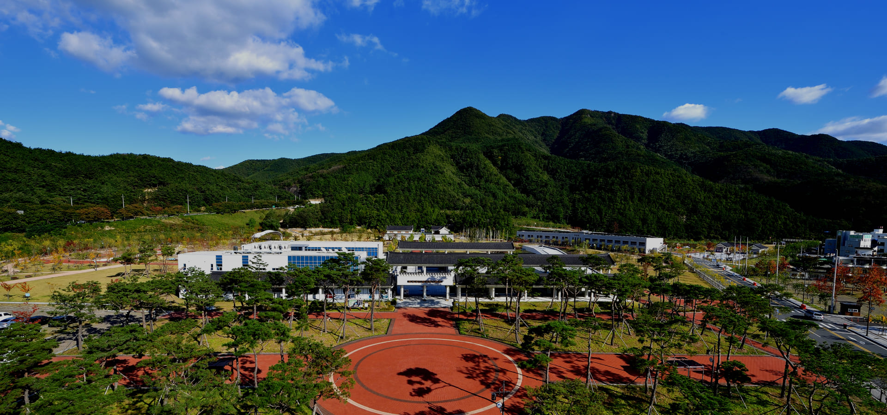

청도 신화랑풍류마을
| 주소 | 경상북도 청도군 화양읍 신화랑길 일대 |
|---|---|
| 연락처 | 054-370-6171 |
| 운영시간 | 상시 개방 (체험 프로그램 별도 운영) |
| 체험프로그램 | 화랑 무예체험, 전통 풍류 공연, 전통 공예 만들기 |
신라시대 화랑들이 수련하던 청도 지역의 전통문화를 계승하는 마을입니다. '신화랑'은 새로운 화랑, 풍류는 자연과 하나 되는 정신을 의미합니다. 전통 가옥과 정원이 어우러진 마을 안에서 화랑 무예, 국악, 전통 놀이 등 다양한 체험을 즐길 수 있습니다.
매년 가을 신화랑풍류마을 축제가 개최되어 전통 공연과 체험 행사가 펼쳐집니다. 봄에는 마을 주변의 벚꽃이 만발하여 사진 찍기 좋은 명소로도 인기입니다. 가족 단위 방문객에게는 전통 공예 만들기 체험 프로그램이 특히 인기입니다.
• 청도읍성 (차량 5분)
• 청도소싸움경기장 (차량 5분)
• 청도 프로방스 포토랜드 (차량 15분)• 청도한우본가 (차량 5분)
• 마을 내 전통 찻집• 청도온천관광호텔 (차량 10분)
• 화양읍 모텔 단지 (차량 5분)